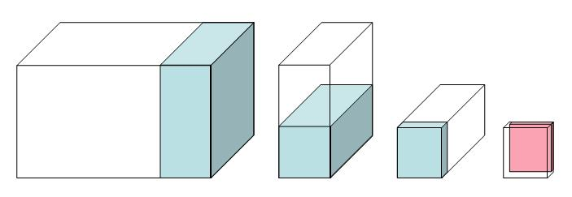

Reminder on different ways to create a geometry setup:
G4PVPlacement (these have been already covered in Hands On 2).G4PVParametrised to place multiple copies
of the same volume with dimensions/position parametrised
by the copy number.
Check the DetectorConstruction.hh file, since many
variables you will need are already defined there.
Implement the second hodoscope.
The second hodoscope is composed of 25 planes of dimensions:
10x40x1 cm. The hodoscopes tiles are composed of scintillator material.
Instantiate
a single shape and a single logical volume. Place 25 physical volume placements
in the second arm mother volume (this mother volume is already created).
Each tile is positioned at Y=Z=0 with
respect to the mother volume, while the X coordinates depends on the
tile numnber.
Hint: Check what is done for the hodoscope of the first
arm. Remember dimensions passed to Geant4 solid classes are half
dimensions.
| DetectorConstruction.cc File: |
// =============================================
|
Build the drift chambers.
The second arm contains 5 drift chambers made of argon gas with
dimensions 300x60x2 cm. These are equally spaced inside the second arm
starting from -2.5 m to -0.5 m along the Z coordinate.
Hint: Use same methods used for step 1.
| DetectorConstruction.cc File: |
// Step 2: Add 5 drift chambers made of argon, with dimensions (X,Y,Z):
|
Add a virtual wire plane in the drift chambers.
Add a plane of wires in the drift chambers of step
2. To simplify our problem we do not describe the single wires,
instead we add a new argon-filled volume of dimensions 300x60x0.02 cm
in the center of each of the five drift chambers.
This exercise is technically simple (a single placement), however it
shows a very useful concept: we create a single instance of this
volume and we place it once inside the mother logical volume (the
drift chamber logical volume), since the mother volume is repeated
five times, each chamber gets its own wire plane. We are
reducing the number of class instances needed for the description
of our geometry (and thus reducing the memory footprint of our
application, beside making the code more compact and readable).
| DetectorConstruction.cc File: |
// Step 3: Add a virtual wire plane of (300,60,0.02)cm
|
Build an electromagnetic calorimeter.
An electromagnetic calorimeter has the goal to measure the energy
of absorbed particles. Its dimensions are such that an electron or
gamma of the typical beam energy is fully absorbed, while hadrons
(such as protons), only leave a fraction of their
energy in an electromagnetic calorimeter (because it is too
short). In our example we implement a homogeneous calorimeter made of
a matrix of CsI
crystals (a charged particles emits light when interacting with this
material, the quantity of light produced is proportional to the
energy lost by the particle).
Build a 300x60x30 cm CsI calorimeter. The calorimeter is made of a
matrix of 15x15x30 cm crystals. Instead of using placements we show
how to use parametrised solids. The idea is that the position of the
placement is a function of the crystal number. The parametrization
class is already available for you in
CellParametrisation. Check the method
CellParameterisation::ComputeTransformation(...) to
understand how the calorimeter cells are implemented.
The calorimeter should be placed at 2 m downstream along Z in the second arm
mother volume.
| DetectorConstruction.cc File: |
// Step 4: Build CsI EM-calorimeter of (300,60,30)cm
|
Implement the hadronic calorimeter
This is a sampling calorimeter made of lead as absorber material
(used for its high density) interleaved with plates of scintillator
(the active material). It is called sampling because only a fraction of
the energy lost by the particles is measured (the one lost in the
active material), this is proportional to the total energy
loss and hence to the impinging particle energy (you may be aware of
the problem of non-compensation, but we will not discuss it
here).
Implement the calorimeter using replicas to slice a larger volume into
smaller units. Each cell has 20 layers of 4 cm thick lead plate and 1 cm
thick scintillator plate. The size of the plate is 30 cm square. The
calorimeter has 10 towers of 2 cells each. Here is a
schematic drawing of the calorimeter. From left to right: the full
calorimeter with a single tower;
a single tower is divided in two cells; the third picture shows a single
cell
with a single layer; finally a single layer with the active scintillator tile.
Beam is perpendicular to the screen.

/tutorial/detector/armAngle,
/tutorial/field/value to move the second arm and set the
magnetic field. Note that geometry can be changed only between
runs. The methods DefineCommands gives an example on how
to define application specific commands (this is an advanced topic not
discussed in this Hands-On). Use the
help UI command to get help on commands.
| DetectorConstruction.cc File: |
// Step 5: Add a "sandwich" hadronic calorimeter of dimensions:
|
Provide visualization attributes for the second arm volumes.
Note that hadronic calorimeter sub-structure is by default made invisible to reduce visual clutter. This is helpful to hide the geometry details less important to the simulation.
| DetectorConstruction File: |
// visualization attributes ------------------------------------------------
|